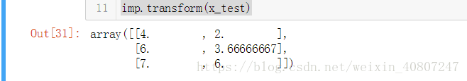

预处理数预处理数据的方法总结（使用sklearn-preprocessing）¶
当我们拿到一批原始的数据
- 首先要明确有多少特征，哪些是连续的，哪些是类别的。
- 检查有没有缺失值，对确实的特征选择恰当方式进行弥补，使数据完整。
- 对连续的数值型特征进行标准化，使得均值为0，方差为1。
- 对类别型的特征进行one-hot编码。
- 将需要转换成类别型数据的连续型数据进行二值化。
- 为防止过拟合或者其他原因，选择是否要将数据进行正则化。
- 在对数据进行初探之后发现效果不佳，可以尝试使用多项式方法，寻找非线性的关系。
- 根据实际问题分析是否需要对特征进行相应的函数转换。
1. 标准化：去均值，方差规模化¶
Standardization标准化:将特征数据的分布调整成标准正太分布，也叫高斯分布，也就是使得数据的均值维0，方差为1.
标准化的原因在于如果有些特征的方差过大，则会主导目标函数从而使参数估计器无法正确地去学习其他特征。
标准化的过程为两步：去均值的中心化（均值变为0）；方差的规模化（方差变为1）。
在sklearn.preprocessing中提供了一个scale的方法，可以实现以上功能
# 预处理数据的方法总结（使用sklearn-preprocessing）from sklearn import preprocessingimport numpy as np # 1\. 标准化：去均值，方差规模化 # 创建一组特征数据，每一行表示一个样本，每一列表示一个特征 # Standardization标准化:将特征数据的分布调整成标准正太分布，也叫高斯分布，也就是使得数据的均值维0，方差为1. # 标准化的原因在于如果有些特征的方差过大，则会主导目标函数从而使参数估计器无法正确地去学习其他特征。 # 标准化的过程为两步：去均值的中心化（均值变为0）；方差的规模化（方差变为1）。 # 在sklearn.preprocessing中提供了一个scale的方法，可以实现以上功能。 x = np.array([[1., -1., 2.], [2., 0., 0.], [0., 1., -1.]]) # 将每一列特征标准化为标准正太分布，注意，标准化是针对每一列而言的 x_scale = preprocessing.scale(x)x_scale
x_scale.shape
# 可以查看标准化后的数据的均值与方差，已经变成0,1了 # axis=0 表示对每一列 x_scale.mean(axis=0)
# axis=1表示对每一行去做这个操作，axis=0表示对每一列做相同的这个操作 x_scale.mean(axis=1)
# 同理，看一下标准差 x_scale.std(axis=0)
preprocessing这个模块还提供了一个实用类StandarScaler，它可以在训练数据集上做了标准转换操作之后，把相同的转换应用到测试训练集中。
这是相当好的一个功能。可以对训练数据，测试数据应用相同的转换，以后有新的数据进来也可以直接调用，不用再重新把数据放在一起再计算一次了。
# preprocessing这个模块还提供了一个实用类StandarScaler，它可以在训练数据集上做了标准转换操作之后，把相同的转换应用到测试训练集中。 # 这是相当好的一个功能。可以对训练数据，测试数据应用相同的转换，以后有新的数据进来也可以直接调用，不用再重新把数据放在一起再计算一次了。 # 调用fit方法，根据已有的训练数据创建一个标准化的转换器# 另外，StandardScaler()中可以传入两个参数：with_mean,with_std.这两个都是布尔型的参数， # 默认情况下都是true,但也可以自定义成false.即不要均值中心化或者不要方差规模化为1. scaler = preprocessing.StandardScaler().fit(x) scaler
# 使用上面这个转换器去转换训练数据x,调用transform方法scaler.transform(x)######################################### 好了，比如现在又来了一组新的样本，也想得到相同的转换new_x = [[-1., 1., 0.]]scaler.transform(new_x)##################################
# MinMaxScaler# 在MinMaxScaler中是给定了一个明确的最大值与最小值。它的计算公式如下： # X_std = (X - X.min(axis=0)) / (X.max(axis=0) - X.min(axis=0))# X_scaled = X_std / (max - min) + min # 以下这个例子是将数据规与[0,1]之间，每个特征中的最小值变成了0，最大值变成了1，请看： min_max_scaler = preprocessing.MinMaxScaler() x_minmax=min_max_scaler.fit_transform(x) x_minmax ################################################################################# 同样的，如果有新的测试数据进来，也想做同样的转换咋办呢？请看： x_test = np.array([[-3., -1., 4.]]) x_test_minmax=min_max_scaler.transform(x_test) x_test_minmax ################################################################################
MaxAbsScaler
原理与上面的很像，只是数据会被规模化到[-1,1]之间。也就是特征中，所有数据都会除以最大值。这个方法对那些已经中心化均值维0或者稀疏的数据有意义。
1.2 规模化稀疏数据¶
如果对稀疏数据进行去均值的中心化就会破坏稀疏的数据结构。虽然如此，我们也可以找到方法去对稀疏的输入数据进行转换，特别是那些特征之间的数据规模不一样的数据。
MaxAbsScaler 和 maxabs_scale这两个方法是专门为稀疏数据的规模化所设计的。
1.3 规模化有异常值的数据¶
如果你的数据有许多异常值，那么使用数据的均值与方差去做标准化就不行了。
在这里，你可以使用robust_scale 和 RobustScaler这两个方法。它会根据中位数或者四分位数去中心化数据。
2 正则化Normalization¶
正则化是将样本在向量空间模型上的一个转换，经常被使用在分类与聚类中。
函数normalize 提供了一个快速有简单的方式在一个单向量上来实现这正则化的功能。正则化有l1,l2等，这些都可以用上：
# 2 正则化Normalization # 正则化是将样本在向量空间模型上的一个转换，经常被使用在分类与聚类中。 # 函数normalize 提供了一个快速有简单的方式在一个单向量上来实现这正则化的功能。 # 正则化有l1,l2等，这些都可以用上： x_normalized = preprocessing.normalize(x, norm='l2') x_normalized ###############################################################################x###############################################################################
preprocessing这个模块还提供了一个实用类Normalizer,实用transform方法同样也可以对新的数据进行同样的转换
# preprocessing这个模块还提供了一个实用类Normalizer,实用transform方法同样也可以对新的数据进行同样的转换 # 根据训练数据创建一个正则器 normalizer=preprocessing.Normalizer().fit(x) normalizer ##################################################################### 对训练数据进行正则 normalizer.transform(x) #################################################################### 对新的测试数据进行正则 normalizer.transform([[-1., 1., 0.]]) # normalize和Normalizer都既可以用在密集数组也可以用在稀疏矩阵（scipy.sparse)中 # 对于稀疏的输入数据，它会被转变成维亚索的稀疏行表征（具体请见scipy.sparse.csr_matrix) ###################################################################################
3 二值化–特征的二值化¶
特征的二值化是指将数值型的特征数据转换成布尔类型的值。可以使用实用类Binarizer。
# 3 二值化–特征的二值化 # 特征的二值化是指将数值型的特征数据转换成布尔类型的值。可以使用实用类Binarizer # 默认是根据0来二值化，大于0的都标记为1，小于等于0的都标记为0。 from sklearn import preprocessing import numpy as np # 创建一组特征数据，每一行表示一个样本，每一列表示一个特征 x = np.array([[1., -1., 2.],[2., 0., 0.],[0., 1., -1.]]) binarizer=preprocessing.Binarizer().fit(x) binarizer.transform(x) ##################################################################################当然也可以自己设置这个阀值，只需传出参数threshold即可 binarizer=preprocessing.Binarizer(threshold=1.5) binarizer.transform(x) ##########################################################################3
4 为类别特征编码¶
OneHotEncoder独热编码¶
学习sklearn和kagggle时遇到的问题，什么是独热编码？为什么要用独热编码？什么情况下可以用独热编码？以及和其他几种编码方式的区别。 首先了解机器学习中的特征类别：连续型特征和离散型特征。 拿到获取的原始特征，必须对每一特征分别进行归一化，比如，特征A的取值范围是[-1000,1000]，特征B的取值范围是[-1,1].如果使用logistic回归，w1*x1+w2*x2，因为x1的取值太大了，所以x2基本起不了作用。所以，必须进行特征的归一化，每个特征都单独进行归一化。 对于连续性特征： Rescale bounded continuous features: All continuous input that are bounded, rescale them to [-1, 1] through x = (2x - max - min)/(max - min). 线性放缩到[-1,1] Standardize all continuous features: All continuous input should be standardized and by this I mean, for every continuous feature, compute its mean (u) and standard deviation (s) and do x = (x - u)/s. 放缩到均值为0，方差为1 Binarize categorical/discrete features: 对于离散的特征基本就是按照one-hot（独热）编码，该离散特征有多少取值，就用多少维来表示该特征。
数据挖掘OneHotEncoder独热编码和LabelEncoder标签编码
一. 什么是独热编码？
独热码，在英文文献中称做 one-hot code, 直观来说就是有多少个状态就有多少比特，而且只有一个比特为1，其他全为0的一种码制。举例如下： 假如有三种颜色特征：红、黄、蓝。 在利用机器学习的算法时一般需要进行向量化或者数字化。那么你可能想令 红=1，黄=2，蓝=3. 那么这样其实实现了标签编码，即给不同类别以标签。然而这意味着机器可能会学习到“红<黄<蓝”，但这并不是我们的让机器学习的本意，只是想让机器区分它们，并无大小比较之意。所以这时标签编码是不够的，需要进一步转换。因为有三种颜色状态，所以就有3个比特。
**即红色：1 0 0 ，黄色: 0 1 0，蓝色：0 0 1 。如此一来每两个向量之间的距离都是根号2，在向量空间距离都相等，所以这样不会出现偏序性，基本不会影响基于向量空间度量算法的效果。 **
**自然状态码为：000,001,010,011,100,101 **
**独热编码为：000001,000010,000100,001000,010000,100000 **
来一个sklearn的例子：
from sklearn import preprocessing enc = preprocessing.OneHotEncoder() enc.fit([[0, 0, 3], [1, 1, 0], [0, 2, 1], [1, 0, 2]]) # fit来学习编码 enc.transform([[0, 1, 3]]).toarray() # 进行编码
输出：array([[ 1., 0., 0., 1., 0., 0., 0., 0., 1.]])
数据矩阵是4*3，即4个数据，3个特征维度。
0 0 3 观察左边的数据矩阵，第一列为第一个特征维度，有两种取值0\1. 所以对应编码方式为**10 、01**
1 1 0 同理，第二列为第二个特征维度，有三种取值0\1\2，所以对应编码方式为**100、010、001**
0 2 1 同理，第三列为第三个特征维度，有四中取值0\1\2\3，所以对应编码方式为**1000、0100、0010、0001**
1 0 2
再来看要进行编码的参数[0 , 1, 3]， 0作为第一个特征编码为10, 1作为第二个特征编码为010， 3作为第三个特征编码为0001. 故此编码结果为 **1 0 0 1 0 0 0 0 1 **
**二. 为什么要独热编码？ **
正如上文所言，独热编码（哑变量 dummy variable）是因为大部分算法是基于向量空间中的度量来进行计算的，为了使非偏序关系的变量取值不具有偏序性，并且到圆点是等距的。使用one-hot编码，将离散特征的取值扩展到了欧式空间，离散特征的某个取值就对应欧式空间的某个点。****将离散型特征使用one-hot编码，会让特征之间的距离计算更加合理。**离散特征进行one-hot编码后，编码后的特征，其实每一维度的特征都可以看做是连续的特征。就可以跟对连续型特征的归一化方法一样，对每一维特征进行归一化。比如归一化到[-1,1]或归一化到均值为0,方差为1。 **
为什么特征向量要映射到欧式空间？
将离散特征通过one-hot编码映射到欧式空间，是因为，在回归，分类，聚类等机器学习算法中，特征之间距离的计算或相似度的计算是非常重要的，而我们常用的距离或相似度的计算都是在欧式空间的相似度计算，计算余弦相似性，基于的就是欧式空间。
三 .独热编码优缺点
**优点：**独热编码解决了分类器不好处理属性数据的问题，在一定程度上也起到了扩充特征的作用。它的值只有0和1，不同的类型存储在垂直的空间。
**缺点：**当类别的数量很多时，特征空间会变得非常大。在这种情况下，一般可以用PCA来减少维度。而且**one hot encoding+PCA**这种组合在实际中也非常有用。
四. 什么情况下(不)用独热编码？
**用：**独热编码用来解决类别型数据的离散值问题，
不用：**将离散型特征进行one-hot编码的作用，是为了让距离计算更合理，但如果特征是离散的，并且不用one-hot编码就可以很合理的计算出距离，那么就没必要进行one-hot编码。 有些基于树的算法在处理变量时，并不是基于向量空间度量，数值只是个类别符号，即没有偏序关系，所以不用进行独热编码。 ** Tree Model不太需要one-hot编码： 对于决策树来说，one-hot的本质是增加树的深度。
**总的来说，要是one hot encoding的类别数目不太多，建议优先考虑。 **
五. 什么情况下(不)需要归一化？
需要： 基于参数的模型或基于距离的模型，都是要进行特征的归一化。
**不需要：**基于树的方法是不需要进行特征的归一化，例如随机森林，bagging 和 boosting等。
我们知道特征可能是连续型的也可能是类别型的变量，比如说：
[“male”, “female”], [“from Europe”, “from US”, “from Asia”], [“uses Firefox”, “uses Chrome”, “uses Safari”, “uses Internet Explorer”].
这些类别特征无法直接进入模型，它们需要被转换成整数来表征，比如：
[“male”, “from US”, “uses Internet Explorer”] could be expressed as [0, 1, 3] while [“female”, “from Asia”, “uses Chrome”] would be [1, 2, 1].
然而上面这种表征的方式仍然不能直接为scikit-learn的模型所用，因为模型会把它们当成序列型的连续变量。
要想使得类别型的变量能最终被模型直接使用，可以使用one-of-k编码或者one-hot编码。这些都可以通过OneHotEncoder实现，它可以将有n种值的一个特征变成n个二元的特征。
# 4 为类别特征编码# 我们知道特征可能是连续型的也可能是类别型的变量，比如说： # [“male”, “female”], [“from Europe”, “from US”, “from Asia”], [“uses Firefox”, “uses Chrome”, “uses Safari”, “uses Internet Explorer”]. # 这些类别特征无法直接进入模型，它们需要被转换成整数来表征，比如： # [“male”, “from US”, “uses Internet Explorer”] could be expressed as [0, 1, 3] while [“female”, “from Asia”, “uses Chrome”] would be [1, 2, 1]. # 然而上面这种表征的方式仍然不能直接为scikit-learn的模型所用，因为模型会把它们当成序列型的连续变量。 # 要想使得类别型的变量能最终被模型直接使用，可以使用one-of-k编码或者one-hot编码。 # 这些都可以通过OneHotEncoder实现，它可以将有n种值的一个特征变成n个二元的特征。 # 特征1中有(0,1）两个值，特征2中有(0,1,2)3个值，特征3中有（0,1,2,3)4个值，所以编码之后总共有9个二元特征。 enc = preprocessing.OneHotEncoder() enc.fit([[0, 0, 3], [1, 1, 0], [0, 2, 1], [1, 0, 2]]) enc.transform([[0,1,3]]).toarray() ########################################################################### 但是呢，也会存在这样的情况，某些特征中可能对一些值有缺失， # 比如明明有男女两个性别，样本数据中都是男性，这样就会默认被判别为我只有一类值。 # 这个时候我们可以向OneHotEncoder传如参数n_values，用来指明每个特征中的值的总个数 enc = preprocessing.OneHotEncoder(n_values=[2,3,4]) # 指明每个特征中的值的总个数分别为 2 3 4 enc.fit([[1, 2, 3], [0, 2, 0]]) enc.transform([[1,0,0]]).toarray() #############################################################################
# one hot encoder 不仅对 label 可以进行编码，还可对 categorical feature 进行编码： from sklearn.preprocessing import OneHotEncoder enc = OneHotEncoder() enc.fit([[0, 0, 3], [1, 1, 0], [0, 2, 1], [1, 0, 2]]) ########################################################################## 对象enc的n_values_成员变量，记录着每一个属性的最大取值数目 # 如第一个属性：0 1 0 1 ==> 2 # 如第二个属性：0 1 2 0 ==> 3 # 如第三个属性：3 0 1 2 ==> 4enc.n_values_
# 对象enc的feature_indices_ 则记录对n_values_的累积值 不过feature_indices_的首位是 0enc.feature_indices_ ########################################################### enc.transform([[0, 1, 1]]).toarray()
数据矩阵是4*3，即4个数据，3个特征维度。
0 0 3 观察左边的数据矩阵，第一列为第一个特征维度，有两种取值0\1. 所以对应编码方式为**10 、01**
1 1 0 同理，第二列为第二个特征维度，有三种取值0\1\2，所以对应编码方式为**100、010、001**
0 2 1 同理，第三列为第三个特征维度，有四中取值0\1\2\3，所以对应编码方式为**1000、0100、0010、0001**
1 0 2
再来看要进行编码的参数[0 , 1, 1]， 0作为第一个特征编码为10, 1作为第二个特征编码为010， 3作为第三个特征编码为0001. 故此编码结果为 **1 0 0 1 0 0100 **
5 弥补缺失数据¶
在scikit-learn的模型中都是假设输入的数据是数值型的，并且都是有意义的，如果有缺失数据是通过NAN，或者空值表示的话，就无法识别与计算了。
要弥补缺失值，可以使用均值，中位数，众数等等。Imputer这个类可以实现。请看：
# 5 弥补缺失数据 # 在scikit-learn的模型中都是假设输入的数据是数值型的，并且都是有意义的，如果有缺失数据是通过NAN，或者空值表示的话，就无法识别与计算了。 # 要弥补缺失值，可以使用均值，中位数，众数等等。Imputer这个类可以实现。请看： import numpy as np from sklearn.preprocessing import Imputer imp = Imputer(missing_values='NaN', strategy='mean', axis=0)imp.fit([[1, 2], [np.nan, 3], [7, 6]])
x = [[np.nan, 2], [6, np.nan], [7, 6]]imp.transform(x)
Imputer类同样也可以支持稀疏矩阵,以下例子将0作为了缺失值，为其补上均值
# Imputer类同样也可以支持稀疏矩阵,以下例子将0作为了缺失值，为其补上均值import scipy.sparse as sp # 创建一个稀疏矩阵x = sp.csc_matrix([[1, 2], [0, 3], [7, 6]]) imp = Imputer(missing_values=0, strategy='mean', verbose=0) imp.fit(x) x_test = sp.csc_matrix([[0, 2], [6, 0], [7, 6]]) imp.transform(x_test)

6 创建多项式特征¶
有的时候线性的特征并不能做出美的模型，于是我们会去尝试非线性。非线性是建立在将特征进行多项式地展开上的。
比如将两个特征 (X_1, X_2)，它的平方展开式便转换成5个特征(1, X_1, X_2, X_1^2, X_1X_2, X_2^2). 代码案例如下：
# 6 创建多项式特征# 有的时候线性的特征并不能做出美的模型，于是我们会去尝试非线性。非线性是建立在将特征进行多项式地展开上的。 import numpy as np from sklearn.preprocessing import PolynomialFeatures # 自建一组3*2的样本 x = np.arange(6).reshape(3, 2) # 创建2次方的多项式 # 比如将两个特征 (X_1, X_2)，它的平方展开式便转换成5个特征(1, X_1, X_2, X_1^2, X_1X_2, X_2^2). 代码案例如下： poly = PolynomialFeatures(2) poly.fit_transform(x)
# 也可以自定义选择只要保留特征相乘的项。 # 即将 (X_1, X_2, X_3) 转换成 (1, X_1, X_2, X_3, X_1X_2, X_1X_3, X_2X_3, X_1X_2X_3). x = np.arange(9).reshape(3, 3) poly = PolynomialFeatures(degree=3, interaction_only=True) poly.fit_transform(x)
# 7 自定义特征的转换函数 # 通俗的讲，就是把原始的特征放进一个函数中做转换，这个函数出来的值作为新的特征。 # 比如说将特征数据做log转换，做倒数转换等等。 # FunctionTransformer 可以实现这个功能 import numpy as np from sklearn.preprocessing import FunctionTransformer transformer = FunctionTransformer(np.log1p) x = np.array([[0, 1], [2, 3]]) transformer.transform(x)